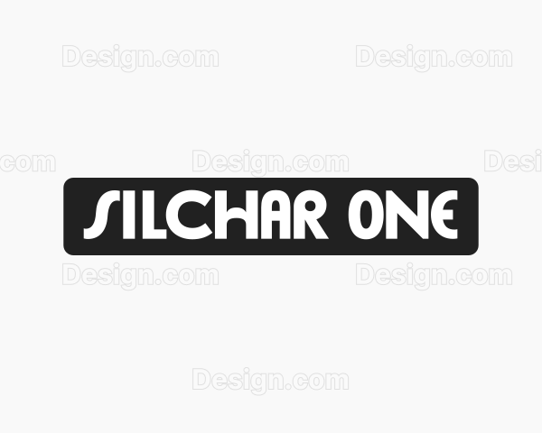

| www.silchar-one.space | ||||||||
Membership Form
WHATSAPP 7019492748All Links |
|||
Our Brand Categories |
|||
|
|
||
|
|
||
1. Digital Ad Platforms (The Giants)
2. Content & Social (The "Face" of TheSilchar1000)
3. Hyper-Local Physical Channels (The "Street" Trust)
4. Direct Outreach & Networking (The Sales Engine)
5. Collaborative & Influencer Channels
6. Creative & Guerilla Marketing
7. Search & Discovery (SEO/Tech)
8. Community & Cause-Based
9. Digital Utility Channels
10. High-Ticket/Elite Channels
|
|||
 |
|||
|---|---|---|---|
First of its kind in Silchar. |
|||